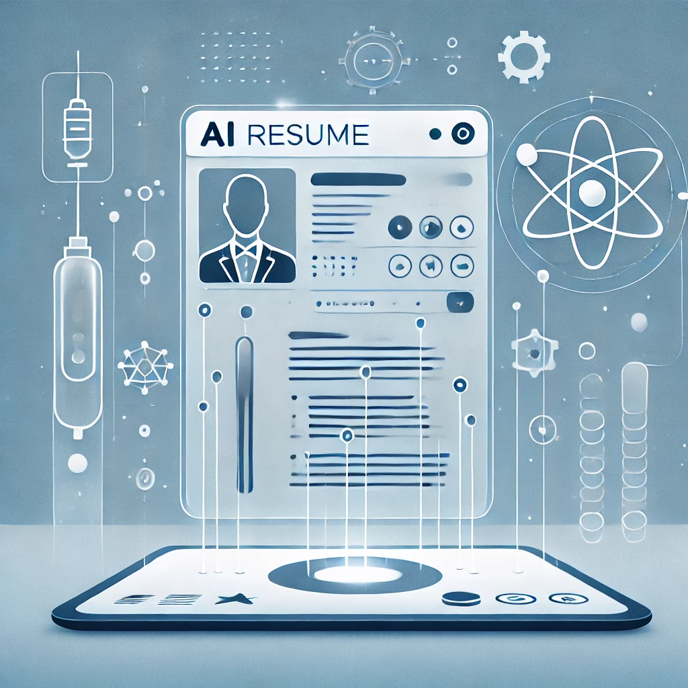
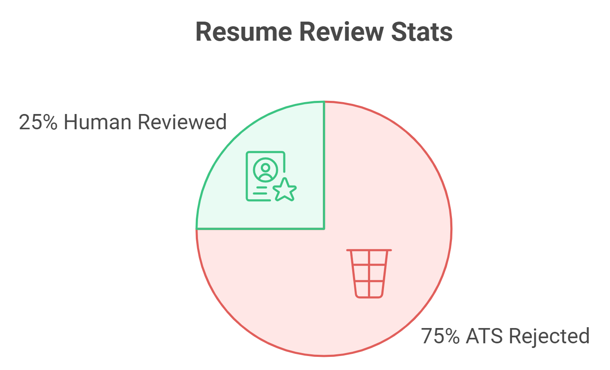
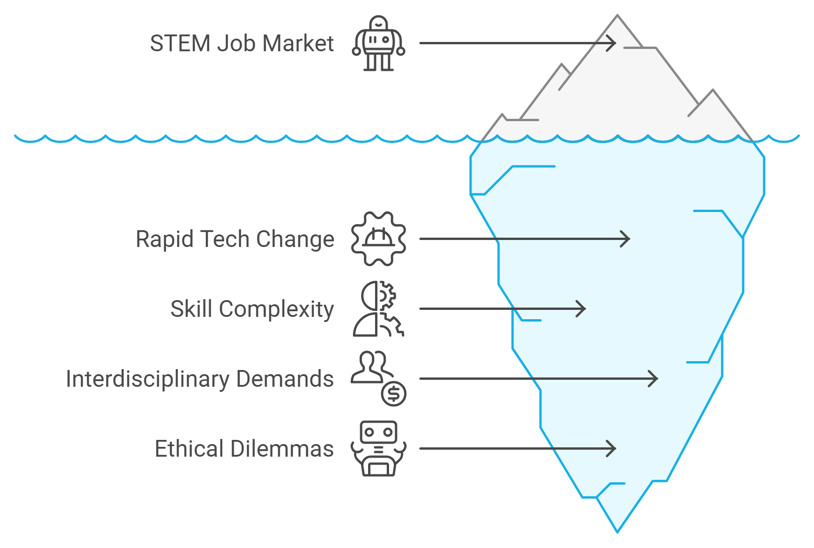

Introduction: Navigating the AI-Driven Future of Tech Hiring

Welcome, fellow tech enthusiasts, to "AI-Powered Resume Mastery for Tech Professionals." This guide aims to help you advance your career, period, and especially if you're a scientist, technologist, engineer, or mathematician in an increasingly AI-driven job market. Buckle up, because this journey is right up there with getting your code to compile on the first try.
The Changing Landscape of Hiring in STEM Fields
The Fourth Industrial Revolution is rapidly transforming the hiring process. Gone are the days when a well-formatted resume and a compelling cover letter were enough. Today, your resume is reviewed by artificial intelligence (AI) before it reaches human hands, and understanding how AI processes your resume is essential to navigating the modern job market.

Per usual, let's start with some numbers.
99% of Fortune 500 companies use Applicant Tracking Systems (ATS) powered by AI
Source: Jobscan, 2023
75% of resumes are rejected by ATS before a human sees them
Source: Harvard Business School, 2022
250 applicants on average per STEM job posting
Source: Glassdoor Economic Research, 2024
In other words, your resume must outperform at least 188 of your peers before it is even seen by human eyes. In this competitive landscape, understanding how AI analyzes and interprets your resume isn't just an advantage—it's as essential as knowing the difference between Python and Anaconda.
The Unique Challenges for STEM Professionals
STEM professionals face unique challenges in today’s AI-driven job market. The combination of rapidly evolving technologies, complexity of technical skills, and interdisciplinary roles complicates your ability to effectively showcase your skills.
- Rapidly Evolving Technologies: Your field is changing faster than you think. Only when you learn about new advances do you realize how far behind you actually are. How do you showcase your ability to stay current?
- Complex Technical Skills: How do you explain your proficiency in quantum entanglement to an algorithm that might not realize "string theory" is not the same as a "theory about string"?
- Interdisciplinary Roles: Many STEM positions now require a blend of skills from different disciplines. Somehow, even after years of honing your laser focus, you must suddenly know how to speak fluent business tax law while dancing the "Macarena".
- Ethical Considerations: As potential creators and implementers of AI systems, how do you navigate the ethical implications of AI in hiring? How do you explain the trolley problem to a robot, and then clarify that the trolley is your career.

But fear not. This guide addresses these challenges head-on, providing you with strategies to adapt to and thrive in the AI-driven hiring market. We'll turn you into the Kevin Mitnick of resume hacking (minus the FBI chase).
How This Book Will Transform Your Job Search Strategy: Time to Upgrade Your Career OS
"AI-Powered Resume Mastery for Tech Professionals" isn't just another guide on resume writing. It's a deep dive into the intersection of artificial intelligence, human resources, and STEM careers. Think of it as the source code for your career success.
Here's what sets this book apart:
- STEM-Specific Insights: Every strategy, tip, and example is tailored for professionals in Science, Technology, Engineering, and Mathematics. We're not just speaking your language; we're coding in it.
- AI Demystified: We break down complex AI concepts into actionable insights, empowering you to optimize your resume for both artificial and human intelligence. We're teaching a neural network to appreciate your neural networks.
- Practical Application: Each chapter includes exercises and examples that allow you to immediately apply what you've learned. Because in STEM, we know the importance of hands-on experience (with appropriate PPE, because YOLO).
- Ethical Considerations: We don't just teach you how to game the system. We explore the ethical implications of AI in hiring and how to navigate them responsibly. Because with great power comes great employability... and responsibility.
- Future-Proofing Strategies: The job market is evolving rapidly. We'll prepare you not just for today's AI, but for the emerging technologies that will shape tomorrow's hiring processes.
- Expert Insights: Benefit from interviews with hiring managers, AI specialists, and successful STEM professionals who have mastered the AI-driven job search.
What You'll Learn: Transforming from Job Seeker to Job Magnet
By the end of this book, you'll be able to:
- Craft resumes that excel in AI-powered applicant tracking systems (without resorting to hiding keywords in white text)
- Showcase your technical skills in a way that resonates with both AI and human recruiters (making you the bilingual genius of the job market)
- Adapt your application strategy for different STEM fields and career stages (because one size fits all does not even work for Snuggies)
- Understand and mitigate potential biases in AI-driven hiring processes (teaching old AI new tricks)
- Develop a long-term career strategy that accounts for the evolving role of AI in STEM industries (future-proofing your career like it's Y2K all over again)
A Roadmap to Your AI-Powered Job Search Success: Your Career GPS
Here's an overview of what to expect in the coming chapters:
- Understanding AI in the Hiring Process: Decoding the Matrix
- The New Paradigm of STEM Resumes: Beyond Paper
- Crafting Your AI-Optimized STEM Resume: Teaching an Old CV New Tricks
- Showcasing Technical Expertise in the AI Age: How to Speak Robot and Human
- Beyond the Resume: Building a Cohesive STEM Application Package: Your Career Avengers Assemble
- Ethical Considerations in AI-Powered Job Applications: The Trolley Problem of Job Hunting
- Future-Proofing Your STEM Career in the AI Era: Building Your Career DeLorean
- Case Studies: AI-Powered Success Stories in STEM: Tales from the Crypt(ography) of Job Search
- AI Tools and Resources for STEM Professionals: Your Utility Belt for the Job Hunt
Your Journey Begins Here: Time to Power Up!
Before diving in, let's assess your current understanding of AI in the hiring process. Take a moment to consider the following questions:
- Do you know how Applicant Tracking Systems work, or is ATS just another Star Wars droid?
- Can you explain the difference between keyword matching and semantic analysis in resume screening?
- Are you familiar with the ethical implications of AI in hiring, or does your knowledge of AI ethics start and end with "I, Robot"?
- Do you know how to quantify your achievements in a way that resonates with AI systems?
- Can you name three free AI tools that can help in your job search, or do you just stick with asking Siri to set a reminder for your interview?
If you could not immediately conjure an answer to any of these questions, don't worry. By the end of this book, you'll be the one teaching AI a thing or two.
Remember, in the rapidly evolving world of STEM, continuous learning is key to success. This book is not just a one-time read—it's a resource to return to as AI continues to transform the hiring landscape.
"The best way to predict the future is to create it." - Peter Drucker
Are you ready to master the art of AI-powered resume creation and supercharge your STEM career? Let's begin this exciting journey together. Turn the page, and take your first step towards becoming an AI-savvy job seeker in the competitive world of STEM. Remember, in the race for the perfect job, it's not about outrunning the bear—it's about outrunning the other job seekers. And with this book, you'll be sprinting ahead in rocket boots.
Case Study: The Quantum Leap of Sarah Chen
Sarah Chen, a quantum computing specialist, was struggling to land interviews despite her impressive background. Her resume, while technically sound, was getting lost in the ATS void. After applying the principles from this book, Sarah optimized her resume for AI screening, highlighting her achievements in a quantifiable manner and using industry-specific keywords strategically.
The result? Her callback rate jumped by 300%, leading to multiple interviews and eventually landing her dream job at a cutting-edge quantum computing startup. Sarah's success story is just one of many you'll discover as we delve deeper into the world of AI-powered job hunting.
Key Takeaways for AI-Powered Resume Mastery
- Understand how AI influences modern hiring processes.
- Balance AI optimization with authenticity to appeal to both AI systems and human recruiters.
- Adapt your resume for the dynamic and evolving STEM job market.